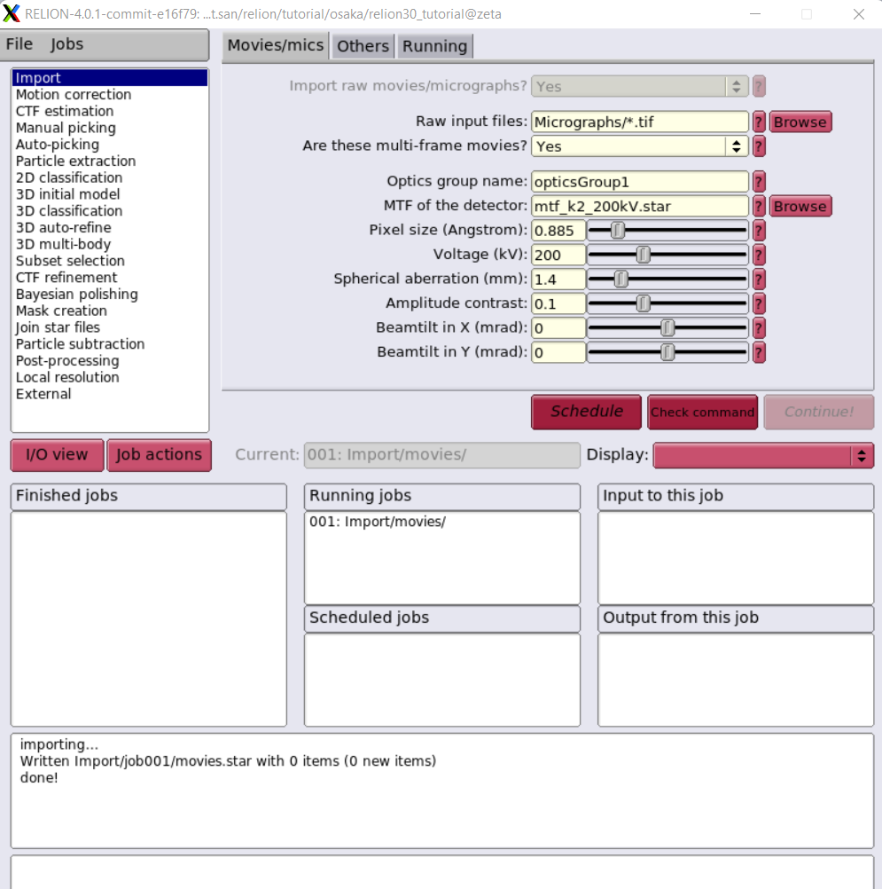

Cryogenic electron microscopy
Cryogenic electron microscopy (cryoEM) is a cryomicroscopy technique applied on samples cooled to cryogenic temperatures. For biological specimens, the structure is preserved by embedding in an environment of vitreous ice. Cryogenic electron microscopy
Relion 4.0 for cryo-EM structure determination
Relion-4 cover the entire single-particle analysis workflow in relion-4.0: beam-induced motion-correction, CTF estimation; automated particle picking; particle extraction; 2D class averaging; automated 2D class selection; SGD-based initial model generation; 3D classification; high-resolution 3D refinement; CTF refinement and higher-order aberration correction; the processing of movies from direct-electron detectors; and final map sharpening and local-resolution estimation. RELION 4.0 Document
Relion 3 or 4 on Exascale Cluster with Singularity
This is very simple guide to run Relion on a DGX100, more effective multinodes should be explore futher. Assume you allocate resource on one of our compute nodes by salloc command. .. code-block:: console
$ salloc -w omega -t 1:0:0 –gres=gpu:1
Download Data
You can download data from Takayuki Kato from the Namba group at Osaka university, Japan. It was collected on a JEOL CRYO ARM 200 microscope.The data and our precalculated results may be downloaded and unpacked using the commands below.
cd ~/
mkdir relion/tutorial/
wget ftp://ftp.mrc-lmb.cam.ac.uk/pub/scheres/relion30_tutorial_data.tar
wget ftp://ftp.mrc-lmb.cam.ac.uk/pub/scheres/relion40_tutorial_precalculated_results.tar.gz
tar -xf relion30_tutorial_data.tar
tar -zxf relion40_tutorial_precalculated_results.tar.gz
Signle particle tutorial
$ singularity shell --nv /app/relion4_gui_cufftw.sif
Singularity> relion &

This image is NOT the best one which we will improve Singularity definition file to run on multi-nodes with Slurm scheduling.
Computational Imaging System for Transmission Electron Microscopy(cisTEM)
cisTEM is user-friendly software to process cryo-EM images of macromolecular complexes and obtain high-resolution 3D reconstructions from them. It was originally developed by Tim Grant, Alexis Rohou and Nikolaus Grigorieff and comprises a number of tools to process image data including movies, micrographs and stacks of single-particle images, implementing a complete “pipeline” of processing steps to obtain high-resolution single-particle reconstructions. cisTEM is distributed under the Janelia Research Campus Software License and can be downloaded here. We recommend downloading and using the pre-compiled binaries, rather than compiling the source code, for best performance. New users are encouraged to follow the tutorial, which provides a quick way to become familiar with the most important functions of cisTEM.
cisTEM <https://cistem.org/>
Run cisTEM on a DGX-A100
$ salloc -w omega -t 1:0:0 --gres=gpu:1
Download Data
To test programm we will need to download the apoferritin test dataset from the cisTEM web page. It comes as another archive called apoferritin_data.tar.gz and is attached to the “Getting Started” Documentation page. Store this archive on a fast local disk where you have about 15 GB of space and unpack it by typing:
$ wget https://grigoriefflab.umassmed.edu/sites/default/files/apoferritin_data.tar.gz
$ tar -xzf apoferritin_data.tar.gz
New folder apoferritin_data contains 20 movies, recorded on an aberration-corrected Titan Krios microscope.
To use X11 Window client, check DISPLAY environment as follow:
$ env | grep DISPLAY
$ singularity exec --nv --env DISPLAY=:10.0 /app/cistem_latest.sif /usr/local/bin/cisTEM
Take notes for DISPAY such as DISPLAY=:10.0, then runs cisTEM inside singularity image.